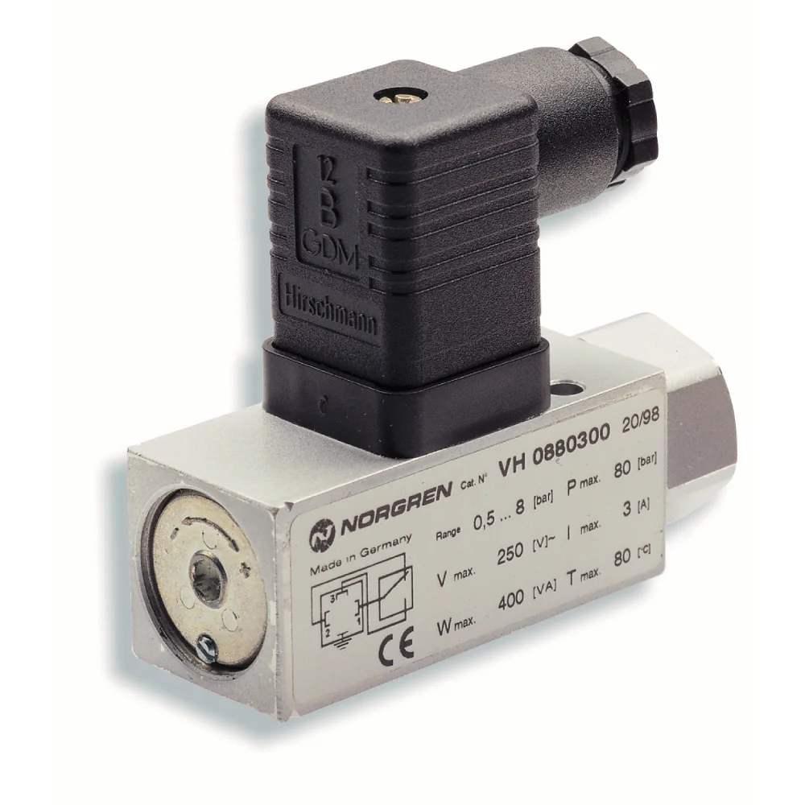
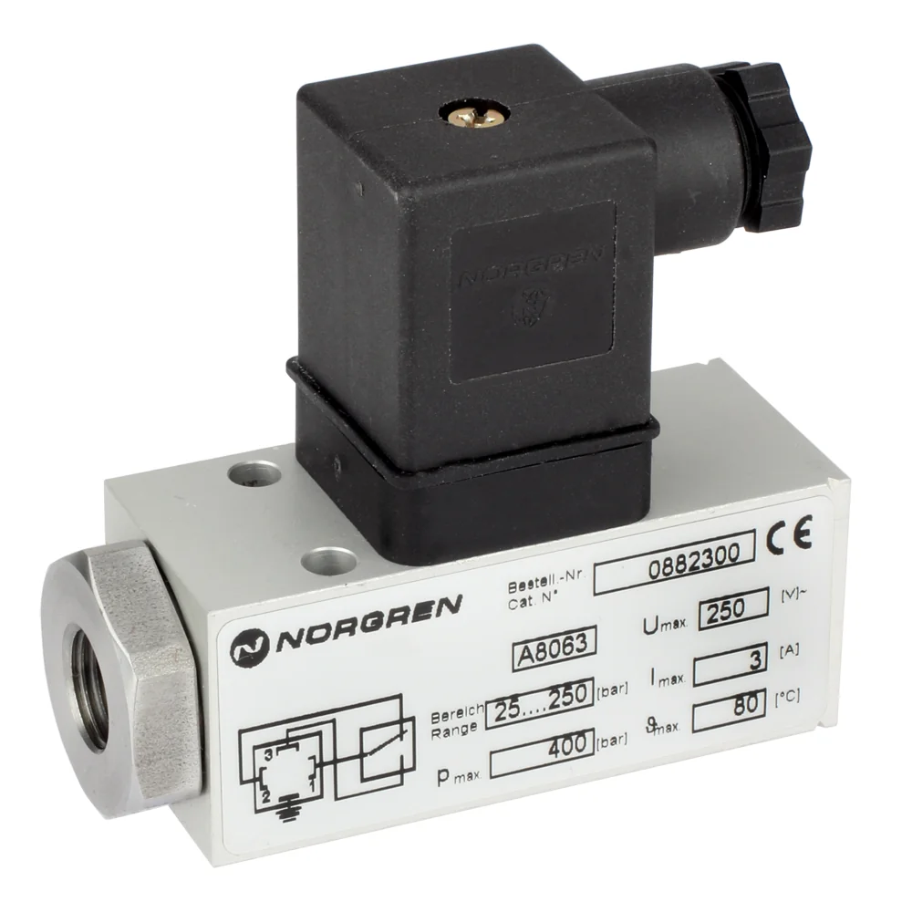

Datasheet (PDF)
en_5_11_001_18D_PN.pdf
Tải tài liệu18D Electro-mechanical pneumatic pressure switch, Flange, -1-0 bar

0881100000000000 là mã Norgren chính hãng thuộc nhóm công tắc áp suất cơ điện dòng 18D Pneumatic, cấu hình Flange. Thông tin trên trang được rút gọn để bạn nhận diện đúng mã trước khi xác nhận nguồn hàng.
Các thông số phục vụ nhận diện ban đầu. Khi đặt hàng, vui lòng gửi yêu cầu để xác nhận lại cấu hình, chứng từ và điều kiện giao hàng.
Tài liệu hiển thị ở mức tham khảo để khách hàng kiểm tra nhanh. Với yêu cầu mua hàng, đội kỹ thuật sẽ xác nhận lại tài liệu phù hợp theo mã và cấu hình thực tế.
en_5_11_001_18D_PN.pdf
Tải tài liệuz9561BR_Functional-Safety-ISO13849_EN.pdf
Tải tài liệuIM_VA_18D_EN.pdf
Tải tài liệuDanh sách tham khảo giúp định hướng phụ kiện, cáp, fitting, coil, mountings hoặc mã tương tự. Khi báo giá, thông tin sẽ được kiểm tra lại theo cụm lắp thực tế.
Electrical connector cable, 2 m, 5 pin, M12 x 1.5, 90° angled, 10-32 V DC
Electrical connector cable, 5 m, 5 pin, M12 x 1.5, 90° angled, 10-32 V DC
Straight electrical connector, M12 x 1, 5m
Electrical connector cable, 2 m, 4 pin, M12 x 1.5, 10-32 V DC
Electrical plug, DIN EN 175301‑803 Form A, 12-240 V AC/DC
IO-Link master, PROFINET interface, x1 5 pin M12 plug, x11 5 pin M12 sockets
Xem mã chínhIO-Link I/O module, Standard, x1 4 pin M12 plugs, x8 4 pin M12 sockets
Xem mã chínhIO-Link master, EtherNet/IP interface, x1 5 pin M12 plug, x11 5 pin M12 sockets
Xem mã chínhIO-Link I/O module, Auxillary power, x2 4 pin M12 plugs, x8 4 pin M12 sockets
Xem mã chính
18D Electro-mechanical pneumatic pressure switch, G1/4, 0.5-8 bar

18D Electro-mechanical hydraulic pressure switch, G1/4, 25-250 bar

18D Electro-mechanical pneumatic pressure switch, G1/4, 1-16 bar

18D Electro-mechanical hydraulic pressure switch, G1/4, 40-420 bar

18D Electro-mechanical hydraulic pressure switch, G1/4, 5-70 bar

18D Electro-mechanical pneumatic pressure switch, Flange, 0.5-8 bar
0881100000000000 thuộc nhóm Electro-Mechanical Pressure Switches. Trang này dùng để đối chiếu mô tả, thông số kỹ thuật, tài liệu và phụ kiện liên quan trước khi gửi yêu cầu báo giá.
Bạn gửi part number công tắc/cảm biến áp suất; chúng tôi đối chiếu và cung cấp thông số chính như dải đo, kiểu tiếp điểm hoặc ngõ ra, ren cổng và vật liệu. Nếu mã có nhiều tài liệu, chúng tôi nêu rõ từng loại. Việc xác minh datasheet giúp bạn chọn đúng dải đo trước khi thay trên máy.
Bạn gửi part number cần tra; chúng tôi đối chiếu và cung cấp các thông số kỹ thuật chính cùng tài liệu liên quan đến mã đó. Nếu một mã có nhiều tài liệu (datasheet, hướng dẫn lắp, bản vẽ), chúng tôi nêu rõ từng loại. Việc này giúp bạn xác minh cấu hình trước khi đưa vào hồ sơ mua hoặc lắp đặt.
Bạn gửi part number thiết bị chính; chúng tôi đối chiếu dữ liệu phụ kiện và datasheet để liệt kê các mã liên quan như đế, đầu nối, cáp, coil hoặc bộ lọc. Danh sách này giúp bạn đặt đồng bộ, tránh thiếu khi lắp. Nếu cần, chúng tôi nhóm phụ kiện theo chức năng để bạn dễ chọn.
Được. Bạn gửi hai part number cần so sánh; chúng tôi đối chiếu các thông số chính từ datasheet như cổng, dải làm việc, điều khiển và phụ kiện liên quan, rồi nêu điểm khác biệt. Trên cơ sở so sánh đó, bạn chọn biến thể phù hợp ứng dụng trước khi yêu cầu báo giá.
Gửi dải áp suất & mã để đối chiếu tiếp điểm và báo giá. Gửi part number, số lượng, ảnh tem hoặc vị trí lắp để đối chiếu cấu hình trước khi báo giá.